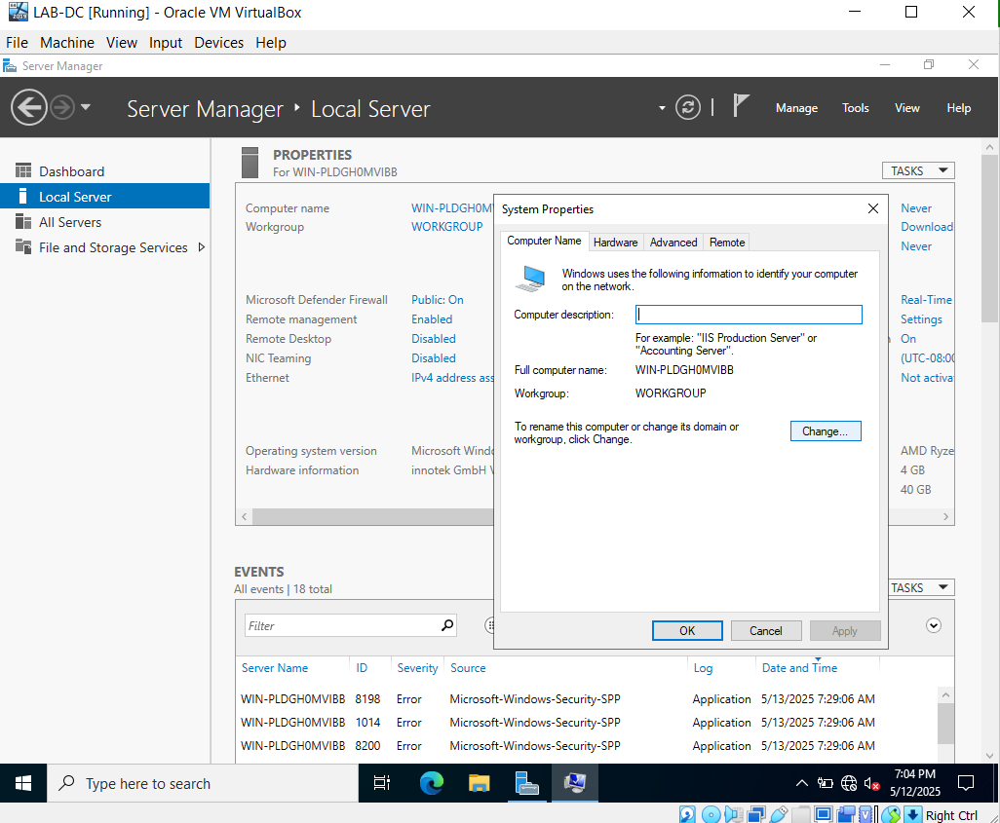
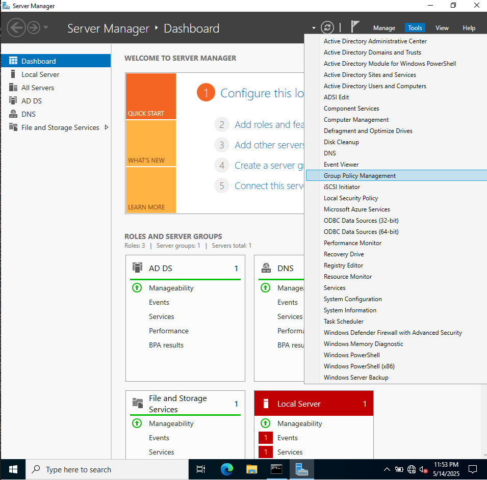
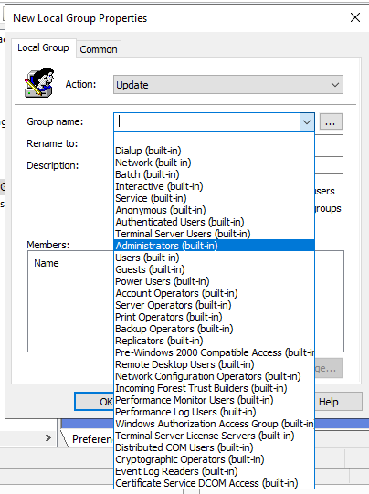
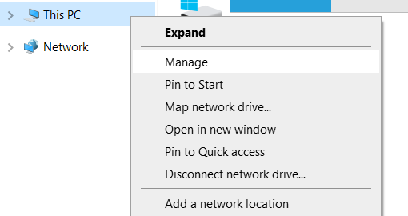

AD Homelab 101: Building an Active Directory + XDR homelab in 101 steps
2025-05-23
Fresh off my CRTO exam I itched for a local AD lab to practice red-team stuff. GOAD with the ELK/Wazuh extension is (at the time of writing) the best choice (author’s personal views) for this but I seriously lacked a gigaton of RAM required for 5 (lab) + 1 (extension) VMs, so I went Thanos mode and declared - Fine! I’ll do it myself.
PS: I’ve tried GOAD (v2) without the ELK/Wazuh stack. It’s a stellar lab that hits a lot of awesome topics. If you haven’t touched it yet, crawl out from under that rock and go check it out.
My host device specifications
The machine I used to built this lab has
- An AMD Ryzen 5500U processor - 6 Physical (12 Logical) cores
- 32 gigs of RAM (which might’ve been huge for ancient times, but since the dawn of LLMs I feel smol and scared.)
Domain Controller
Fetch Windows Server Image
Download the Windows Server 2022 VHD file from here. Create a copy of the downloaded file.
Setup a VM
I used VirtualBox to create a new VM named LAB-DC and imported the downloaded VHD file. I provided the lab with Virtualbox Host-Only network connection, which can be created leveraging the Tools > Network window.
Boot up the VM and follow the installation steps:
- Select the Locale settings.
-
Accept the License agreement.
-
Create a password for the administrator account. I used
lab@1234$.
- Click on Finish.
Configure VM addons
-
Log-in as administrator.
-
From the toolbar, select add ‘Virtualbox Guest-Addons’. Install it to improve the VMs execution.
Follow along after the server VM restarts.
Set the server hostname
- In the server manager application window, navigate to
Local Serverfrom the left pane. Click onComputer NameunderProperties. Further, click on theChangebutton to change server name.

Click on OK and restart the VM.
Configure the static IP address
- Hit
Win+Rand runncpa.cplto open Network Connections under Control Panel. View the property of the ethernet interface.
- Click on
Internet Protocol Version 4 (TCP/IPv4)and select its properties. Set the preferred IP Address and set the gateway to Host’s IP Address. Set the preferred DNS same as the IP Address of the server. Finally, click onOK.
Install Active Directory Domain Services
- Launch
Server Manager. Navigate toManage > Add Roles and Features. Continue with default installation.
- Continue Clicking on next until
Select Server roles. SelectActive Directory Domain Servicesand click onAdd Featuresin the window that pops-up.
Ensuring that Active Directory Doman Services is selected, click on Next.
-
Go forward with default selection in
FeaturesandAD DStab by clicking onNext. -
On the
Confirmationtab, select theRestart the destination server automatically if requiredif required and click onInstall.
- Once greeted with following screen, click on the flag icon.
Under Post-deployment configuration section, click on Promote this server to a domain controller.\
- Create a new forest and set the appropriate name.
Click on next.
- Let the forest functional level and domain functional level be at default of
Windows Server 2016.
- Keep the default roles for the DC. Set the DSRM password. I used
labdsrm@1234$
- In the
DNS Optionsmenu, just clickNext.
-
Follow through and click
Nexton verify the NetBIOS domain name. -
Under the
Pathsconfiguration window go with default settings if no changes are needed.
-
Click on
NextunderReview Optionswindow. -
After
Prerequisite Checkspass, click onInstallto continue.
- Let the server restart.
- Once the server restarts, log in as
<DOMAIN>\Administratorusing the password of administrator we setup above while installing the VM (here:lab@1234$).
Creating Domain Objects
Creating Organizational Units (OUs)
NOTE: One may skip this and directly add users.
- Launch Server Manager and navigate to
Tools > Active Directory Users and Computers
- Right-click on the
<DOMAIN NAME>(here and hereafterLAB.LOCALfor us), selectNewand click onOrganizational Unit.
In the dialog bog, provide with an OU name of your choice and click on OK.
We can create nested OUs by:
- Right-click on the OU of choice, navigate to
New > Organizational Unitand follow the process as above.
I created two more OUs under our LAB-OU namely, Users and Computers, within Users I further created two OUs - Administrators and Researchers. (It made for a good practice)
Creating a User
-
Right-click the
AdministratorsOU underLAB-OU > Users, navigate toNew > User. -
Fill in the name details. Click on
Next.
- Set the password details and select any other configuration required (here:
admin@1234). Click onNext.
- Click on
Finish.
Practise by creating multiple users.
Promoting a user to Domain Administrator
- Right-click on the newly created user and navigate to
Properties.
- Navigate to
Member OfTab. The screen should display the groups this particular user is part of. Click onAdd....
- In the
Select Groupswindow, within the form-field labeled Enter the object names to select (examples), enterdomainand Click onOK.
A dialog box with all group names starting with Domain should appear, select the Domain Admins group and click on OK.
Click on Apply, then click on OK.
Creating a Group
- Navigate to the OU of your choice, right-click and select
New > Group. Add details and click onOK.
Add Group Members
- Right-click on the newly created group and select
Properties. Open theMembersTab, click onAdd....
- A
Select Users, Contacts, Computers, Service Accounts, or Groupswindow opens up. Within the form field under Enter the objct names to select (examples) enter the name of target user (click onCheck Namesto correct the format). Finally, click onOK.
Click on Apply and then click on OK.
Group membership of user can be verified by navigating to user’s
Properties > Member Of.
Creating a File Share
- Create a new folder (here
test-share).
- Navigate to
Properties > Sharingfrom the context-menu of the folder. Click onAdvanced Sharing.
- Enable
Share this folder. ConfigureShare nameif needed, click onApplyand click onOK.
- Visit the DC and the file-share would be visible.
Configure file-share permissions
- Navigate to
Properties > SecurityTab from context-menu of the folder/file share.
- Click on
Edit. Next, click onAdd...
- In the
Select Users, Computers, Service Accounts, Grupswindow, search and select the entities. Click onOK.
- Change the Permissions for the entity from the
Allow/Denylist. Finally, Click onApplyandOKrespectively.
Adding a computer to the AD Domain
A long time ago in a galaxy far, far away Microsoft offered Windows VM images to test Internet-Explorer. The files have since been archived across internet. One may grab the version that suits them here all other places of their choice. I am using virtualbox, so it would be a virtualbox image in my case.
- Download the archive, extract it and import the (here
.ova) file in virtualbox (Ctrl+Ifor importing an image).
Configure the network adapter of new machine to connect to Virtualbox host-only adapter (same as the DC).
- Log into the VM (
IEUser:Passw0rd!). Run (Win+R)ncpa.cplto enterNetwork Connectionswindow inControl Panel > Network and Interent. Configure the DNS server to DC IP for the Ethernet interface by navigating throughProperties(as above).
Although the Virtualbox host-only adapter would provide this VM with a range in same subnet as DC through DHCP, I will configure a static IP for this machine (for identification purposes in my later projects).
- Launch
Settingsand go toAccounts > Access work or school. Click onConnect.
- Click on
Join this device to a local Active Directory domain.
- Enter the domain name in the
Join a domainwindow. Click onNext.
- Enter the username and password of a Domain Administrator account to authenticate.
- Click on
Skip.
Restart the VM.
- Login using one of the user accounts created earlier.
- Go to
Control Panel > Network and Interent > Network and Sharing Centerto validate you are connected to the domain.
The reachability can be established from the command-prompt as follows:
The computer would be visible in the
ComputersSection under theActive Directory Users and Computers. It can be dragged-and-dropped to any OU we created.
Create a Group Policy
- Back on the DC machine, launch the
Server Managerand go toTools > Group Policy Management.

One can navigate through different Organizational Units (OUs), and select the one required.
Group policy to create a local administrator account
- Right click on the OU with computers, select
Create a GPO in this domain, and Link it here...
- Provide a name for the new Group Policy Object (GPO) and click on
OK.
- Right-click on the newly created GPO and select
Edit.
- A
Group Policy Management Editorwindow pops-up. Go toPreferences > Control Panel Settingsand selectLocal Users and Groups. Right-click on the table (empty here), and selectNew > Local Group.
- Within the
New Local Group Properties, set theActionto beUpdate. Select theGroup nameto beAdministrators (built-in)from the drop-down menu.

- Click on
AddunderMemberstable.
- Click on the
...button beside name to spawn theSelect User, Computer, or Groupwindow.
- Enter the object name (here
ashtrace, a domain-joned user I created earlier). Click onCheck Namesto retrieve the particular user name in correct format. Click onOK.
Click on OK again (Notice that the user name is prefixed by the domain name.)
Finally, Click on Apply and OK respectively.
- Validate the GPO by going back to
Group Policy ManagementWindow, navigate to the OU and select the GPO created. Visit theSettingstab.
Titles can be expanded through clicks over them, and it can be observed that the GPO updates the membership of the built-in administrators group.
A window-pop with alert from internet-explorer/edge might spawn complaining website trust issues as the setting page renders an HTML file. Go forth and trust the source, by selecting
Addin the window itself, to render the contents.
Syncing group policy updates
-
Go to the machine added earlier.
-
Either reboot it, or spawn a command prompt and type
gpupdate /force. -
Once update, open up file explorer. Right-click on
This PCand selectManage.

Within the Computer Management window, go to Local Users and Groups. Double-click on Groups, followed by a double-click on Administrators.
It is evident that LAB\ashtrace is a member of the builtin-administratosr group now, and their credential can be used to exeute task with administrative privileges.
Add a Server to AD Lab
- Use the copy of the Windows server VHD image we created earlier, to spawn a new VM machine connected to the Virtualbox Host-Only adapter.
NOTE: If you get UUID conflict run
C:\Users\ashtrace\VMs>"C:\Program Files\Oracle\VirtualBox\VBoxManage.exe" internalcommands sethduuid <path-to-vhd-file>
-
Configure the locale settings and setup the administrator password (reference the steps executed when preparing VM for the DC i.e. steps 1-2-3-4).
-
Once the VM reboots, through the server manager configure a hostname for the VM (reference step 7). I named the server
LAB-SRV. -
After the VM restarts again, configure a static IP address and enter the DC’s IP for DNS (reference step 46, use credential setup for lab server to login).
- Open file explorer. Right-click on
This PC, selectProperties. This opens up theAboutpage inSettings. Scroll-down and click onAdvanced system settings. In the pop-window go toComputer Nametab and click onChange.
- Switch to
DomainfromWorkgroupand enter the domain name (here:LAB.LOCAL), enter the domain administrator credentials. After successful authentication a dialog box with messageWelcome to domain <domain name>should appear. Restart the VM when asked.
- After reboot, use domain credentials to log onto the server. I used the
ashtraceaccount credentials as it would be part of the built-in administrator group owing the GPO created earlier (Ensure that the LAB-SRV machine is part of the OU to which the GPO has been mapped, if not on the DC, open upServer Manager> go toActive Directory Users and ComputersfromComputersdrag theLAB-SRVmachine to the particular OU (LAB-OU > Computersin this case), back on theLAB-SRVmachine rungpupdate /forceand reboot)
Configure IIS service on the newly added server
We briefly enable a second network adapter for the VM and allow access to the Wi-fi network.
-
In the
Server ManagerApplication, select toManage > Add Roles and Features. SelectRole-based or feature-based installationmode and click onNext. Ensure that the server is selected inServer Selectionwindow. -
Select
Web Server IISin theServer Roleswindow and click onAdd featuresin the pop-window that appears. Click onNext.
- Click on
NextinFeatureswindow followed by anotherNext. In theWeb Server Role (IIS)window’sRole serviceslist select following underApplication Development(if you want ASP.NET support) along with the default features selected. Click onNext.

-
Under
Confirmationallow the wizard to restart the VM if needed and click onInstall. -
Once the installation succeeds, visit the server from the workstation added earlier to establish if the IIS service is up and running.
Adding XDR
Wazuh is an open-source XDR. It ships OVA image among other installation methods.
-
Download the OVA file and import it in Virtualbox.
-
Change the network adapter to host-only, change the graphics controller to
VMSVGA(underSettings > Display > Graphics Controller) and enable theEnable Hardware Clock in UTC Timefeature underSettings > System > Extended Features. -
Power-up the VM, login using credentials
wazuh-user:wazuh.
Setup static IP address
- Find the name of the ethernet interface using
ip a.
[wazuh-user@wazuh-server ~]$ ip a
1: lo: <LOOPBACK,UP,LOWER_UP> mtu 65536 qdisc noqueue state UNKNOWN group default qlen 1000
link/loopback 00:00:00:00:00:00 brd 00:00:00:00:00:00
inet 127.0.0.1/8 scope host lo
valid_lft forever preferred_lft forever
inet6 ::1/128 scope host noprefixroute
valid_lft forever preferred_lft forever
2: eth0: <BROADCAST,MULTICAST,UP,LOWER_UP> mtu 1500 qdisc fq_codel state UP group default qlen 1000
link/ether 08:00:27:bf:d2:7c brd ff:ff:ff:ff:ff:ff
altname enp0s17
inet 192.168.56.107/24 brd 192.168.56.255 scope global eth0
valid_lft forever preferred_lft forever
inet6 fe80::a00:27ff:febf:d27c/64 scope link proto kernel_ll
valid_lft forever preferred_lft forever
- Check the status of the ethernet interface to identify the file being used to manage it from
systemd-networkdby runningnetworkctl status <interface-name>(here and hereafter the interface-name iseth0)
[wazuh-user@wazuh-server ~]$ networkctl status eth0
● 2: eth0
Link File: /usr/lib/systemd/network/99-default.link
Network File: /etc/systemd/network/10-cloud-init-eth0.network
State: routable (configured)
Online state: online
Type: ether
Path: pci-0000:00:11.0
Driver: e1000
Vendor: Intel Corporation
Model: 82545EM Gigabit Ethernet Controller (Copper) (PRO/1000 MT Single Port Adapter)
Alternative Names: enp0s17
Hardware Address: 08:00:27:bf:d2:7c (PCS Systemtechnik GmbH)
MTU: 1500 (min: 46, max: 16110)
QDisc: fq_codel
IPv6 Address Generation Mode: eui64
Number of Queues (Tx/Rx): 1/1
Auto negotiation: yes
Speed: 1Gbps
Duplex: full
Port: tp
Address: 192.168.56.107 (DHCP4 via 192.168.56.100)
fe80::a00:27ff:febf:d27c
Activation Policy: up
Required For Online: yes
DHCP4 Client ID: IAID:0x62b7eef0/DUID
DHCP6 Client DUID: DUID-EN/Vendor:0000ab116c1ecb03a0526b40
- Check the value of
Network Fileattribute (here:/etc/systemd/network/10-cloud-init-eth0.network). Create a file with name<words-between-number-and-interface>.disabled(eg:cloud-init.disabled)
[wazuh-user@wazuh-server ~]$ sudo touch /etc/cloud/cloud-init.disabled
- Remove the file discovered as value of
Network Fileattribute.
[wazuh-user@wazuh-server ~]$ sudo rm /etc/systemd/network/10-cloud-init-eth0.network
- Create a new file
/etc/systemd/network/10-static.network
[Match]
Name=eth0
[Network]
Address=192.168.56.150/24
Gateway=192.168.56.1
DNS=8.8.8.8
DNS=1.1.1.1
- Restart the
systemd-networkdservice.
sudo systemctl restart systemd-networkd
- Validate the changes through
networkctl status eth0.
Access the Wazuh dashboard
- Visit the URL through IP address configured earlier (here:
https://192.168.56.107) and credentialadmin:admin.
Deploy Wazuh agents
- Click on
Agent Management > Summaryfrom the hamburger menu icon on the top left of the dashboard. For your first agentDeploy new agentpage should appear, further agents can be added via clicking onDeploy new agentbutton.
- Under
Select the package to download and install on your system:selectWindows: MSI 32/64 bits. UnderServer address, add the add IP address configured for this wazuh-server VM.
- Skip optional settings, the command under
Run the following commands to download and install the agent:fetches the installer frompackages.wazuh.comthus for the sake of installation enable a second network adapter on the VMs and provide access to internet throughBridged Adapter.
- Log onto the target VM with administrative account (Domain administrator on
LAB-DCand local administrator, for e.g. the one created earlier through GPO, on the workstation and serverLAB-SRV). Open a PowerShell session with administrative privileges. Copy the command fromRun the following commands to download and install the agent:section of theDeploy new agentpage and run it in the PowerShell session.
- After the command is executed run
NET START WazuhSvcfrom the same powershell session. ThroughTask Manager > Servicesit is evident a certianWazuhSvcservice was created and is running.
After a while the agent would be visible on the Agent Management > Summary dashboard (first as Never connected then as Active.)
- Repeat the steps to install the agent on other VM machines in the
LAB.LOCALdomain. Finally, theAgent Management > Summaryshould look like this.
Finally
-
Agument this lab setup by adding on other servers and configurations like delegation, PKI etc. and do share the guides and resources with me.
-
Eat
-
Sleep
-
Hack
-
Repeat
-
Stay Hydrated
-
Touch Grass
Quick Troubleshoot
- The log of wazuh agent can be viewed from the file
C:\Program Files (x86)\ossec-agent\ossec.log